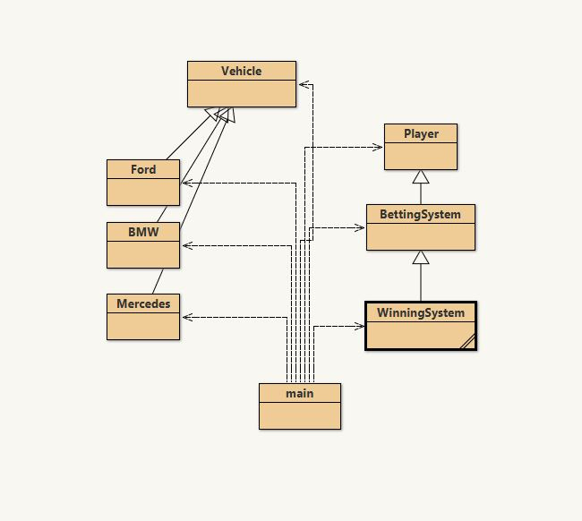
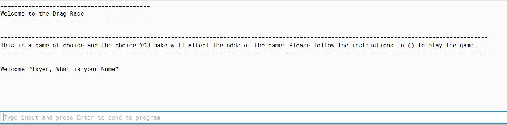
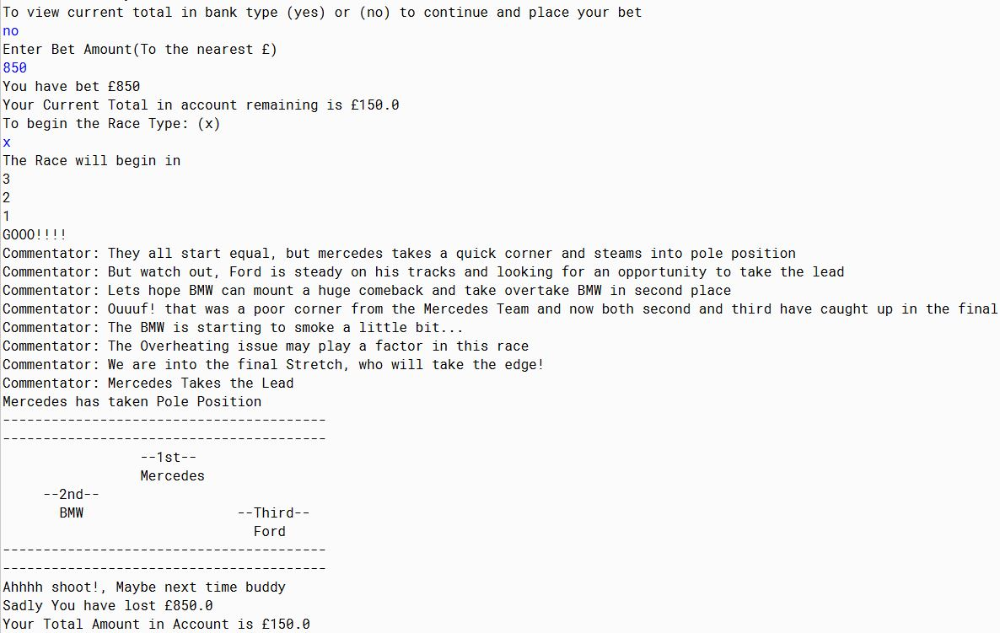

PROJECTS
Car Betting Game
In my first year of university, I had the opportunity to create a 'Car Betting Simulation Game' for my final project in my "Object Oriented Programming" module. This project was worth 40% of our final grade.
I spent several weeks trying to implement differnet types of OOP into my game. The game is based around the users choice, whatever the user does can affect the outcome. So the user can select which car they would like to choose e.g. 'Ford', 'Mercedes', 'BMW'. Then they could choose to add mods or not and this would subsquently affect the overall horsepower of the vehicle. Then the user would choose which car to bet on and then the amount. Then the race would commence with commentary also depending on the users choices. Finally, at the end, it would show the user how much they won/loss depending on how much they bet and the odds of the vehicle actually betted on!


